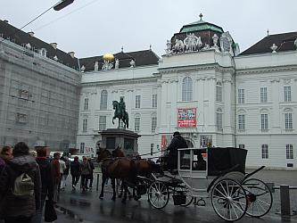

A tymczasem w Cameracie...
.
2013-10-11
Godzina 05.30, to jakaś nieludzka pora!!! A my już jedziemy autokarem do Wiednia. I choć miny mamy jeszcze „niewyraźne”, to zaraz będzie weselej, bo Camerata tak ma. Wiedeń przywitał nas deszczem, ale co to dla nas?
Zwiedzamy „zapłakany”, ale piękny Wiedeń.
Resztę zwiedzamy z autokaru. I na szczęście, bo znowu leje.
Zwiedzamy Wiedeń z autokaru.

© Stowarzyszenie Muzyczne Chór Camerata Wieliczka
Projekt i wykonanie:  Prowadzenie strony: Małgorzata Wysocka-Cebula
Prowadzenie strony: Małgorzata Wysocka-Cebula